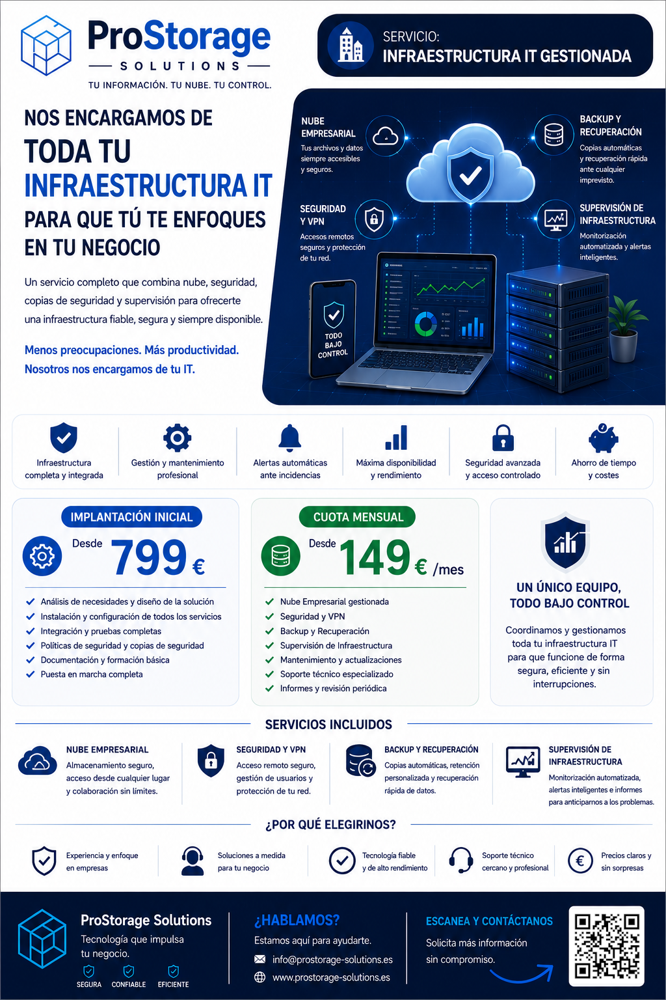

Un servicio integral que combina cloud empresarial, seguridad, acceso remoto, copias de seguridad y supervisión de infraestructura bajo una única gestión.

Centralizamos la gestión tecnológica para que no tengas que preocuparte por la infraestructura.
Unificamos nube, seguridad, backups y supervisión bajo una misma solución.
Reducimos el impacto de fallos, pérdidas de datos o problemas de acceso.
Te ayudamos a tener una infraestructura más predecible, ordenada y escalable.
Nube privada para compartir archivos y trabajar desde cualquier lugar.
Acceso remoto seguro y gestión de usuarios autorizados.
Copias automáticas y recuperación ante incidencias.
Alertas automatizadas y visibilidad del estado de los servicios.
Diseño, instalación y configuración completa de la infraestructura gestionada.
Desde 799 €Gestión, mantenimiento, soporte, backups, seguridad y supervisión.
Desde 149 €/mesEmpresas que necesitan una gestión tecnológica externa y cercana.
Infraestructura preparada para crecer de forma ordenada.
Un único proveedor para nube, seguridad, backups y supervisión.
Cuéntanos tu situación y diseñaremos una solución tecnológica adaptada a tu negocio.
Solicitar informaciónPara pequeñas empresas, puede cubrir muchas necesidades habituales de gestión tecnológica.
Sí, combina cloud empresarial, seguridad, backup y supervisión.
Sí. La solución se ajusta según tamaño, usuarios, datos y necesidades.
No.